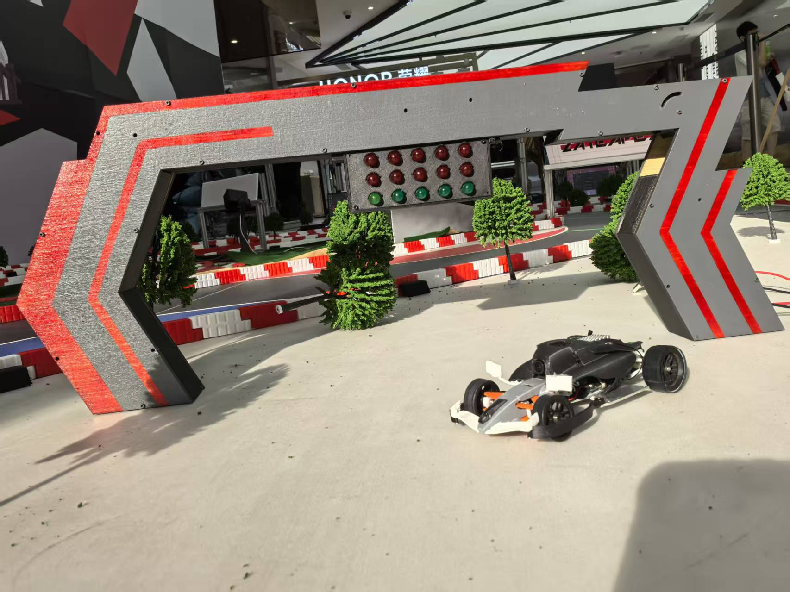
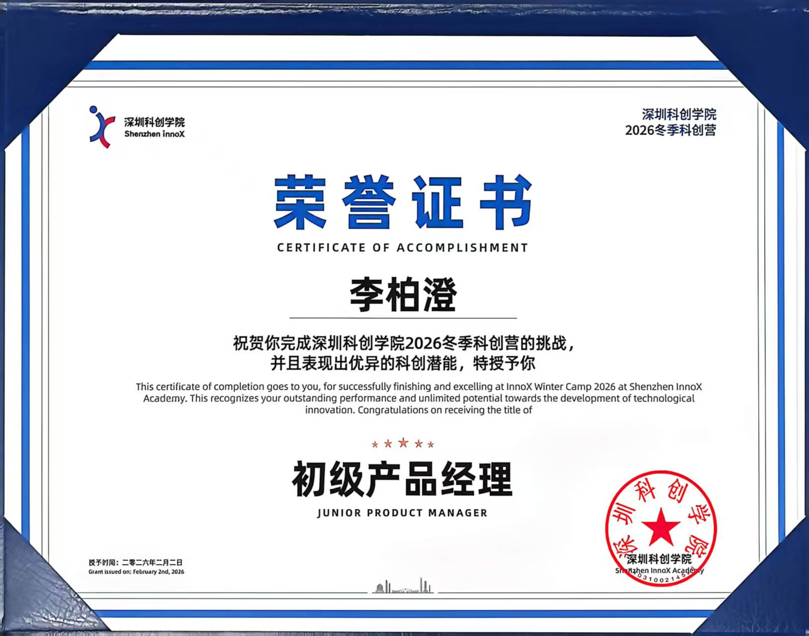

经历Experience
2025.07 · 大一暑假 · 为期一个月Jul 2025 · freshman summer · one month
结构实习生Structure Intern
速竞创新 · 深圳科创学院入驻企业(VR 体感赛车)SuJing Innovation · incubated at Shenzhen Institute (immersive racing simulator)
公司产品为第一视角实时传输 + 力反馈方向盘 + 震动座椅的沉浸式体感赛车。我的工作:
The product is an immersive racing rig: first-person live video + force-feedback wheel + vibrating seat. My work:
- 独立设计了一个结构连接件(固定图传与风扇),用 SolidWorks 建模 + 3D 打印,经 3 版迭代解决干涉问题后成功装车,完整走通"建模→打印→试装→改"的设计闭环,并借此掌握了 SolidWorks。Independently designed a structural connector (mounting the video transmitter and fan): modeled in SolidWorks, 3D-printed, and after 3 iterations to resolve interference, successfully fitted it to the vehicle — a full model→print→test-fit→revise loop that got me hands-on with SolidWorks.
- 试营业期间跟随 leader 参与赛车故障排查(累计约 20 车次),主要负责分析问题成因、提出思路并打下手,从中入门机械维修与调试。During the trial-operation period, assisted the team lead in troubleshooting the rigs (~20 sessions), focusing on analyzing root causes and offering ideas while learning hands-on repair and debugging.
- 实操了激光切割、喷漆等加工工艺,并参与新车型布局与结构强度优化的讨论。Got hands-on with laser cutting and spray painting, and joined discussions on new-model layout and structural-strength optimization.

2025.09 – 至今 · 大二Sep 2025 – present · sophomore year
核心成员 · 结构 / 运动控制Core member · Structure / Motion Control
科垣创新 · 初创团队KeYuan Innovation · startup team
参与组建初创团队,先后承担结构设计、运动控制与财务等工作,贯穿三代样机:
Co-built the startup team, taking on structural design, motion control, and finance across three prototype generations:
- 第 1、2 代(储物领跑小车):独立完成整车结构设计(后桥两轮差速 + 前置万向轮)。Gen 1 & 2 (storage pacer cart): independently designed the full vehicle structure (rear two-wheel differential + front caster).
- 第 3 代(轮圈式机器人):负责强化学习仿真训练与部署(详见作品集)。Gen 3 (wheel-hub robot): owned RL training in simulation and deployment (see Projects).
- 同时负责团队财务管理。Also handled the team's finances.
2026.01.20 – 2026.02.10 · 大二寒假Jan 20 – Feb 10, 2026 · sophomore winter break
高校代表 · 冬季科创营学员University Representative · Winter Innovation Camp Trainee
深圳科创学院 · 冬季科创营Shenzhen InnoX Academy · Winter Innovation Camp
作为高校代表参加深圳科创学院冬季科创营,获得"初级产品经理"结业证书。
Attended the Shenzhen InnoX Academy Winter Innovation Camp as a university representative; awarded the "Junior Product Manager" certificate.
